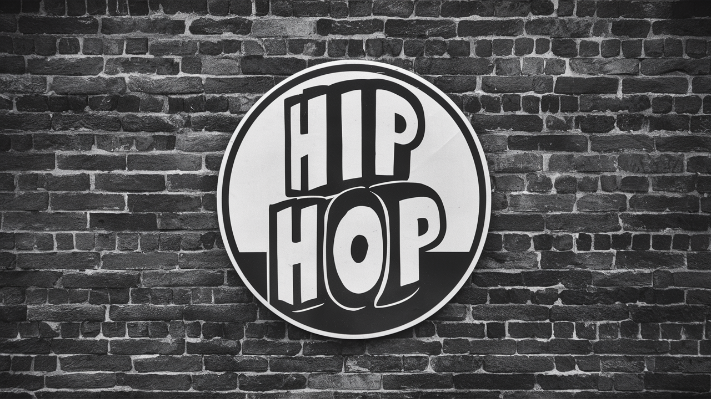

Descubre una colección única de obras de arte que capturan la esencia del hip hop de la costa oeste de los años 90. Desde murales callejeros hasta graffitis vibrantes y fotografías icónicas, nuestra galería te transportará a una época de creatividad sin límites y expresión artística auténtica
Los años 90 fueron una era dorada para el hip hop, donde artistas como Tupac Shakur, The Notorious B.I.G., Dr. Dre y Snoop Dogg dominaron la escena musical. El arte urbano también floreció durante este tiempo, con grafiteros y muralistas dejando su huella en las calles de las ciudades.
Nuestra sección de murales muestra el nivel de arte y detalle que trae consigo la cultura Hip hop de los años 90. Que comienza desde un par de lineas en una pared, hasta murales icónicos que parecen fotografías impresas en las enormes paredes de la ciudad
